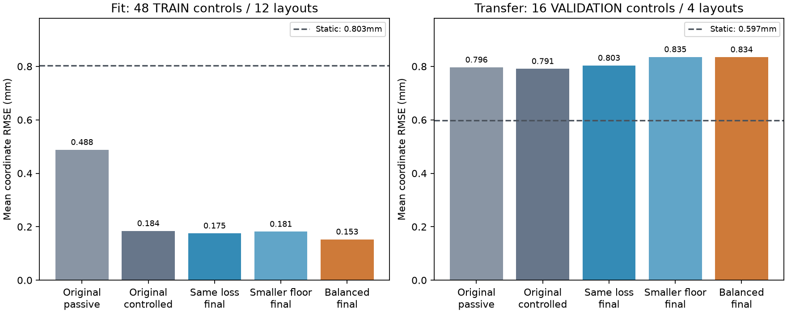
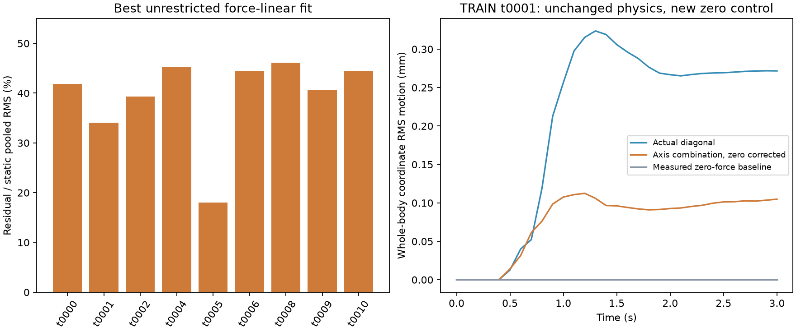

Follow-up to the forward/inverse diagnosis. This report contains development evidence, not a new sealed comparison. The campaign remains active.
Reducing the small-response loss floor and balancing support types improves the fit on training controls. It does not fix the prediction on different validation layouts. A separate TRAIN-only experiment also shows that exact force superposition is incompatible with these simulator recordings, even after measuring the zero-force response.
All three trials use the unchanged Green architecture, the same passive initializer, 152 passive TRAIN episodes and 48 candidate TRAIN controls. Each runs 12,000 steps with matched data budgets. The only ablations are the control loss normalization floor (0.4 versus 0.04 mm) and balanced support-type sampling. Four old validation layouts select checkpoints; all best checkpoints occur at the first gradient step. Final checkpoints are reported separately to distinguish capacity to fit from transfer. Independent diagonal responses never fit these weights.

| Model/checkpoint | TRAIN error(mm) | VALIDATION error(mm) | Median VALIDATION amplitude ratio* |
|---|---|---|---|
| original_passive | 0.488 | 0.796 | 0.231 |
| original_controlled | 0.184 | 0.791 | 1.032 |
| same_loss_best | 0.480 | 0.798 | 0.238 |
| same_loss_final | 0.175 | 0.803 | 1.143 |
| small_response_loss_best | 0.483 | 0.790 | 0.230 |
| small_response_loss_final | 0.181 | 0.835 | 1.517 |
| balanced_small_response_loss_best | 0.480 | 0.782 | 0.229 |
| balanced_small_response_loss_final | 0.153 | 0.834 | 1.407 |
*Amplitude ratios use only controls whose actual coordinate RMS motion is at least 0.05 mm. They do not measure direction or phase. The balanced final model fits TRAIN with 0.153 mm error versus 0.803 mm static, but validation remains 0.834 mm versus 0.597 mm static. The best selected balanced checkpoint is 0.782 mm, still worse than static. These are four fixed validation layouts; control frames are not independent population samples.
On nine TRAIN layouts without prescribed support motion, use the three actual axis-push recordings to predict the independently recorded diagonal response. The logged forces obey the expected 0.5x + 0.5y + 0.25z combination. The mean trajectory error of that combination is 0.238 mm, versus 0.229 mm for static. Even allowing a completely unrestricted independent linear response at every time, node and coordinate leaves a mean 39.3% residual relative to each layout's pooled static RMS.
This initial fit assumes zero displacement at zero input, as the current Green model does. That assumption itself must be checked; the result alone is not proof of nonlinear real-world elasticity.

A transparent wrapper replaces only the public control menu of the unchanged verified Isaac worker. It measures three axis pulses, zero force, the diagonal and a reset replay, on four TRAIN layouts covering all support types. Physics, hardware, timestep, capture synchronization and acceptance tolerances are unchanged. Only fully independently validated cases appear below.
| TRAIN layout | Support | Zero-force RMS from rest(mm) | Zero-corrected diagonal error(mm) | Best affine residual | Old axis replay bitwise equal |
|---|---|---|---|---|---|
| t0001 | fixed_patch | 0.000004 | 0.177 | 33.4% | True |
| t0000 | point_pin | 0.000004 | 0.018 | 41.0% | True |
| t0002 | two_patches | 0.000004 | 0.039 | 38.6% | True |
| t0003 | moving_patch | 1.283971 | 0.232 | 16.2% | True |
In t0001 the zero-force baseline is only about 4 nanometres RMS from rest; the original +x response reproduces bit for bit. Subtracting this measured baseline still leaves 0.177 mm diagonal error and a 33.4% pooled affine-fit residual. Constant drift and changed generation conditions do not explain that case. Numerical solver/discretization effects and finite-deformation physics remain possible causes; continuum accuracy is not established. For moving supports, zero force still permits the prescribed support motion and must not be interpreted as zero input.
The next matched from-scratch comparison uses the original Green map, the existing nonlinear coordinate operator, and the same nonlinear operator referenced to zero force and zero support-motion amplitude. The last variant adds no parameters; it retains nonlinear force dependence while enforcing exact rest at zero input. These candidates are not declared successful. The four old validation layouts are development only. Newly captured control layouts and 32 newly reserved confirmation layouts remain separate roles.
The additional data loader admits only declared TRAIN and checkpoint-selection controls. It rejects calibration-only cases, reserved control-response gate cases and all TEST cases before opening their private responses. Validation passive trajectories were already used in model selection in earlier phases; the new control gate is a held-out response task, not wholly unseen physical layouts. The 32 fresh confirmation layouts are the final independent comparison.
No uncertainty-guided probe comparison has been rerun. Known-force prediction must pass the campaign gate first.
All fit/transfer metrics and checkpoint hashes · Nine-layout TRAIN audit · Verified zero-force analysis and input hashes · 17 phase 2 checks · Manifest · Nonlinear phase protocol · Campaign
Commands: experiments/evaluate_campaign_pilots.py, experiments/audit_campaign_superposition.py, experiments/run_isaac_linearity_diagnostic.py, and experiments/analyze_isaac_linearity.py --episodes t0001 t0000 t0002 t0003 --output NEW.json. Existing dataset/models are in the published artifact index; campaign raw data/model publication follows completed snapshots.